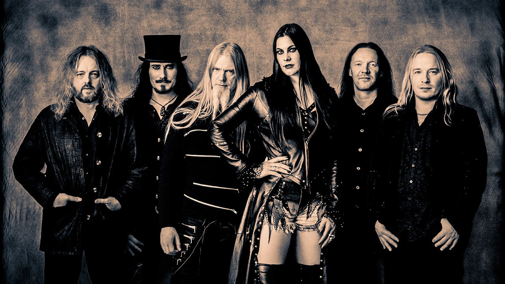
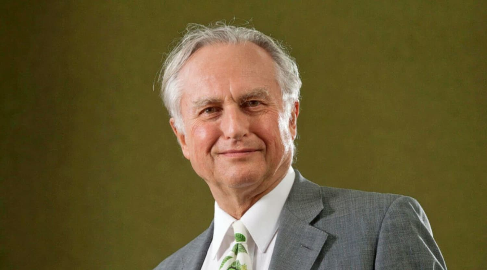
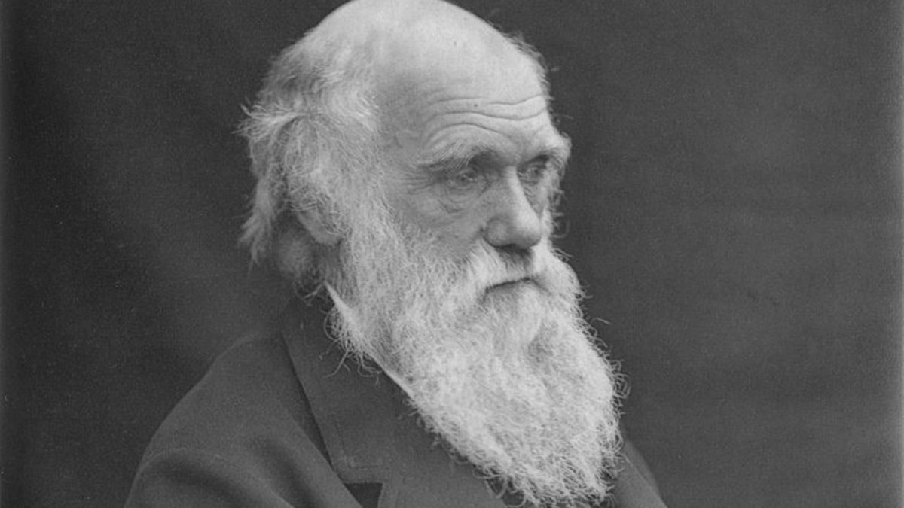
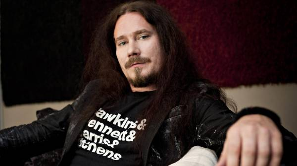

Citações Favoritas

It's hard to light a candle, easy to curse the dark instead.
{Nightwish - Last Ride Of The Day}


Nós vamos morrer e isso nos torna os sortudos.
A maioria de nós nunca vai morrer porque
nunca irá nascer.
As pessoas com potencial que poderiam ter estado
aqui no meu lugar, mas que de fato nunca verão
a luz do dia, ultrapassam a quantidade de grãos de areia do Saara.
Certamente estes fantasmas não nascidos
incluem poetas melhores que Keats, cientistas melhores que Newton.
[...] Nós sabemos disso porque as possíveis pessoas
permitidas por nosso DNA excede massivamente o número de pessoas atuais.
Aqueles desafiando a probabilidade
somos você e eu em nossa trivialidade, que estamos aqui.
Somos os poucos privilegiados que ganhamos na loteria do nascimento contra todas as probabilidades.
Como ousamos lamentar nosso inevitável retorno ao estado anterior,
de onde a grande maioria jamais saiu?
{Dawkins, Richard / Darwin, Charles - The Greatest Show On Earth}

Fear is a choice you embrace.
{Holopainen, Tuomas - Weak Fantasy}